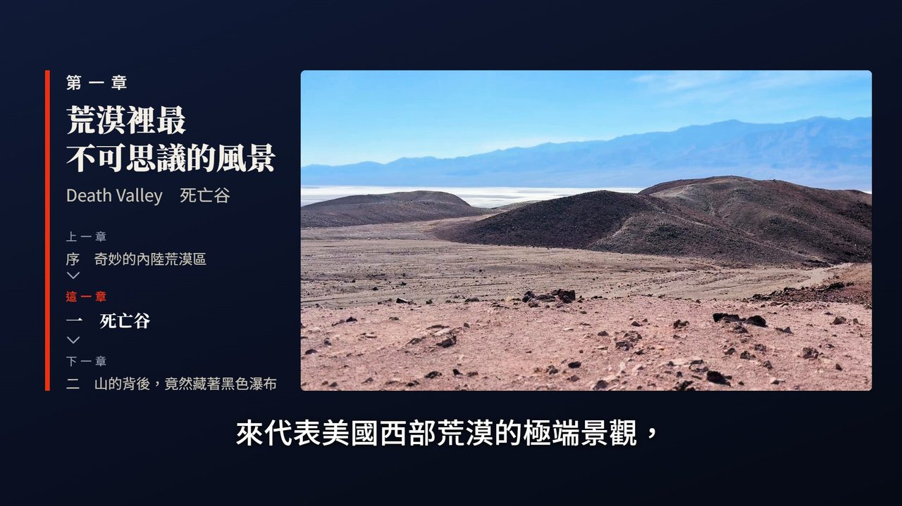
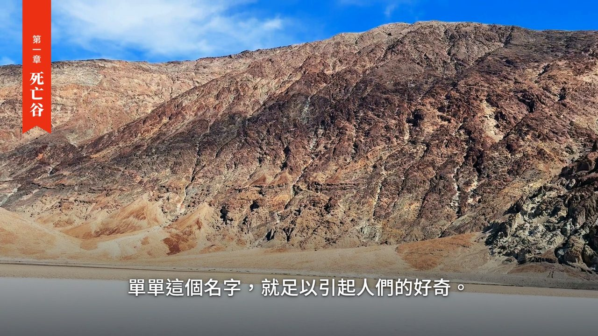

開發誌 · 2026-11-21 · 系列（七）版型方案
版型：每一集選自己的視覺方案
一集節目的「長相」由很多東西決定：主畫面多大、字幕放哪裡、段落標題長什麼樣子、觀眾怎麼知道現在講到哪一段、整體是什麼顏色。 這些東西如果每一集重新設計，一個人的頻道撐不下去；如果全頻道只有一種，旅行節目和講事件來龍去脈的節目又會互相將就。
我們的做法是：先做好一整套版型方案，每一集在控制台選一個。選定之後，整集的視覺方案就跟著定下來，引擎照著出片。
目前有哪些可以選
| 版型 | 長相 | 適合 |
|---|---|---|
| A 典雅／B 現代／C 書卷 | 主畫面＋右側欄，側欄列出全片段落，進度用底線標出 | 第一代，三種字體與配色 |
| D 直書 | 主畫面放大，右欄由右而左直排全片段落，進度是一條直條 | 改編紀錄片、段落多的集數；新專案的預設 |
| E 刻度 | 主畫面更大，全片段落變成畫面最底下一條 64 像素的刻度尺 | 畫面為主的集數 |
| F 深藍刻度 | E 的版面，換成深藍配色 | 野生動物那一集頻道主要的「E 的比例、深藍的顏色」 |
| 時間線 | 疊在其他版型上：段落列變成「上排時間、下排事件」，章節卡的大字變成時間 | 講事件來龍去脈的集數 |
| G 動態（八種方案） | 每章開頭約 12 秒總覽，之後資訊縮到一邊，實拍滿版 | 旅行、風景為主的集數 |
另外幾個開關跟著版型一起選：手機加大（必讀的字拉到手機上看得清楚的大小，見（六））、 黑白（原片與圖片一律轉成黑白）、側欄片名底下那一行自己寫（自己寫稿、畫面來自好幾處的集數，不要讓它看起來像改編自某一支影片）。
設計交給 Claude Design，出片交給引擎
每一款版型都由 Claude Design 設計，交回來的是網頁（HTML 與 CSS），原檔不動地收進版型資料夾。 引擎直接拿這份網頁算圖、分層、合成，所以設計改了，拿回來就能用；控制台的預覽也用同一份，頻道主在平板上看到的就是成片的樣子。 片頭動畫與片尾卡也一樣，是頻道共用的一份設計，每一集都套用，不跟著版型換。
動態版型：讓畫面大一點
到了荒漠那一集，頻道主要的是「影片的空間放大」。舊版型的側欄很好用，但永遠佔掉四分之一的畫面，而旅行節目最值錢的就是畫面。 他的構想是：每一章開頭十多秒列出章名和章節之間的關係，之後縮到一邊，讓實拍滿版，字幕直接壓在畫面下方。


第一輪做了三種樣張：目錄縮成右側直條、路線圖縮成左上角小標、「上一章／這一章／下一章」縮成一條書籤。他選了書籤， 我們又延伸出五種：上緣章號列、直條自動收起、書籤＋章末預告、朱紅直欄、目錄＋承接。荒漠那一集最後用的是「書籤＋章末預告」—— 每一章結束前五秒，書籤底下預告下一章要去哪裡。
選了一個，其他的照樣留著
選定之後，我們原本的習慣是把沒選上的收掉，保持引擎乾淨。頻道主隔天說：
我希望都能夠保存下來，在不同的片子裡面，我可以有不同的選擇，不要只留一個現在的選擇。
所以八種方案全部接進了引擎。控制台的「設定 → 畫面樣式」裡，每一種方案是一張卡：兩張靜態圖、一段示意影片、他當時寫的評語 （「visually appealing」「keep for the future episode」「not consider now」），再加上總覽要停幾秒。以後要加新的方案， 只要在版型網頁與引擎裡各加一筆、在控制台的目錄裡登記，控制台本身不用改版。這也成了一條頻道守則：選了一個，不代表丟掉其他的。
一集的視覺方案包含什麼
選版型只是第一步。一旦選定，下面這些也跟著定了，整集統一：
- 章節卡的樣式與章號的寫法（數字、時間，或旅行集的「第 N 站／共 M 站」）。
- 字幕的大小與一行放幾個字——引擎從版型量出來，字幕斷句跟著走。
- 圖解與示意動畫的留白：動態版型左上角有書籤、下方有字幕，動畫裡的字與重點就避開那兩塊（見下一篇）。
- 旅行集的章節地圖（見（十二））。
- 配色：深藍、朱紅書籤、時間線的強調色。
回頭看這十集：第二集用刻度、野生動物那一集從現代改成深藍刻度、講事件的那一集加了時間線、荒漠那一集是動態的書籤＋章末預告。 每一集長得不一樣，但每一種長相都是事先做好、測過手機、可以重複選的。
不弄壞舊的版型
每加一種版型，舊的那幾種還有好幾集在用。所以新的部分寫在新的檔案裡，只有選了它的章節才會走進去； 加深藍配色時，拿四集、六種樣式、手機加大、時間線共 240 種組合比對，產生的畫面逐字相同；加動態版型時，舊版型的程式一字未改， 重做的章節逐位元相同。這部分在（十八）細講。
本頻道由 AI 協助製作與記錄，選題、判斷與觀點出自頻道主本人。文中不含任何憑證與金鑰。